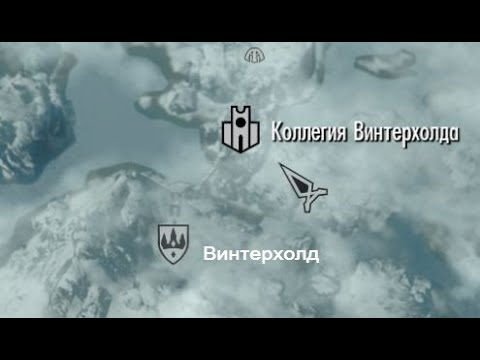

Соратники — аналог Гильдии Бойцов из предыдущих игр серии. Соратники по сути своей являются наёмниками. Избранные члены Соратников под названием «Kруг» являются вервольфами. Также они борются с организацией под названием «Серебряная Рука». Соратники располагаются в Вайтране. У Соратников не существует какого-либо официального руководства: каждый Соратник сам себе господин или госпожа. Самых мудрых и сильных Соратников переводят в «Предвестников», которые дают советы менее опытным Соратникам. Предводитель — Кодлак Белая Грива, после его смерти им становится Довакин. «Лейтенанты» организации — Вилкас, Фаркас, Эйла и Скьор. Мнения об этой организации очень сильно расходятся: если послушать Вигнара Серую Гриву, он опишет Соратников как банду обычных бандитов и наёмников, но сами Соратники и некоторые горожане утверждают, что они — легендарный орден воинов, а также братья и сестры по чести, которые существовали со времен великого Исграмора.

Коллегия Винтерхолда
Коллегия Винтерхолда — объединение магов Скайрима (старый конкурент Гильдии Магов, успешно переживший своих соперников). Единственное место в Скайриме, где можно официально обучиться магии (хотя заклинания и магические вещи можно покупать у придворных магов, однако более широкий ассортимент книг с заклинаниями именно в Коллегии). Но самые мощные заклинания (в том числе мастерские заклинания) могут быть получены только в этой гильдии. Маги обитают в Винтерхолде. Ученик, успешно прошедший аттестацию и отличившийся от остальных учеников, становится кандидатом на пост архимага. Архимаг — Савос Арен, данмер (темный эльф), позже погибает из-за Анкано, и после урегулирования конфликта им становится Довакин.
Гильдия Воров
Гильдия Воров — воровская организация, обосновавшаяся в Рифтене. В отличие от гильдии воров в предыдущих играх серии, в Скайриме она вначале очень слаба. Вступить к ним можно в Рифтене. Если не помогать Гильдии, то она, судя по репликам персонажей, развалится сама через поколение, но если Довакин выполнит особые заказы во всех крупных городах, Гильдия Воров вернёт свое огромное влияние, авторитет и капитал. Мастер и глава — Мерсер Фрей, однако оказывается, что он нечестным путем получил эту должность: он убил своего предшественника Галла, поскольку тот догадался, что Мерсер тайно присваивал себе деньги из казны Гильдии и осквернил Сумеречную гробницу, святилище Триады Соловьёв, которые поклонялись даедрической принцессе Ноктюрнал. Соловьи — более опытные и могущественные воры, несущие гнев Ноктюрнал на каждого, кто стоит у них на пути к цели. «Лейтенанты» организации — Бриньольф, Векс, Делвин Мэллори и Карлия (в будущем при прохождении сюжета за Гильдию Воров).
Тёмное братство
Тёмное Братство — остатки некогда влиятельной гильдии ассасинов Тамриэля. Чтобы вступить в неё, нужно выполнить задание Авентуса Аретино (его можно найти в Виндхельме, после разговора с трактирщиком в таверне "Спящий великан") на убийство Грелод Доброй — хозяйки приюта, издевающейся над детьми. Также есть квест, в котором можно полностью уничтожить Тёмное Братство, убив для начала их лидера в Скайриме — некую Астрид — при первой встрече с ней. В отличие сюжета «Oblivion», здесь Тёмное Братство ведёт себя больше как банда обычных наёмных убийц, чем таинственная секта ассасинов, яро следовавших своим древним традициям. Скайрим — последний оплот Тёмного Братства в Тамриэле: в других провинциях оно было расформировано или уничтожено.
Имперский легион/Братья Бури
Имперский легион/Братья Бури — две враждующие фракции (пройти обе цепочки заданий одним персонажем не представляется возможным). Игроку предстоит выбрать одну из сторон — либо бороться во имя Империи на стороне Императора под командованием генерала Туллия, либо встать на сторону Ульфрика Буревестника — главы нордского ополчения. Также присутствует возможность предать выбранную сторону при выполнении некоторых квестов. Если игрок не выберет сторону, то война будет продолжаться за кадром (даже в случае заключения перемирия).
Коллегия Бардов
Коллегия Бардов — приключенческая организация. Игроку придётся выполнять различные просьбы членов гильдии (например отправиться в какие-либо руины, чтобы добыть определённый предмет) для продвижения по службе. Они расположены в Солитьюде.
Клинки/Седобородые
Клинки/Седобородые — после прохождения главного квеста можно присоединиться к Седобородым или же к воссоздающейся организации Клинков, где игроку будет предложено пригласить или нанять знакомых, которым он помог, или просто наёмников, которые будут служить в этой организации «посмертно». Если завершить гражданскую войну вместо заключения перемирия, то игроку будут рады сразу обе организации.
Стража Рассвета/Клан Вампиров замка Волкихар
Стража Рассвета/Клан Вампиров замка Волкихар — после достижения 10 уровня при входе в какой-либо населённый пункт можно встретить члена Стражи Рассвета, который предлагает персонажу присоединиться к ним. Вступив в гильдию, игрок проходит серию квестов, после которых он отправляется в замок Волкихар, и там ему приходится делать выбор: либо проходить игру дальше за Стражу Рассвета, либо присоединиться к Клану Вампиров. Стражу Рассвета возглавляет Изран, главой клана вампиров является лорд Харкон. Доступно лишь в дополнении Dawnguard.